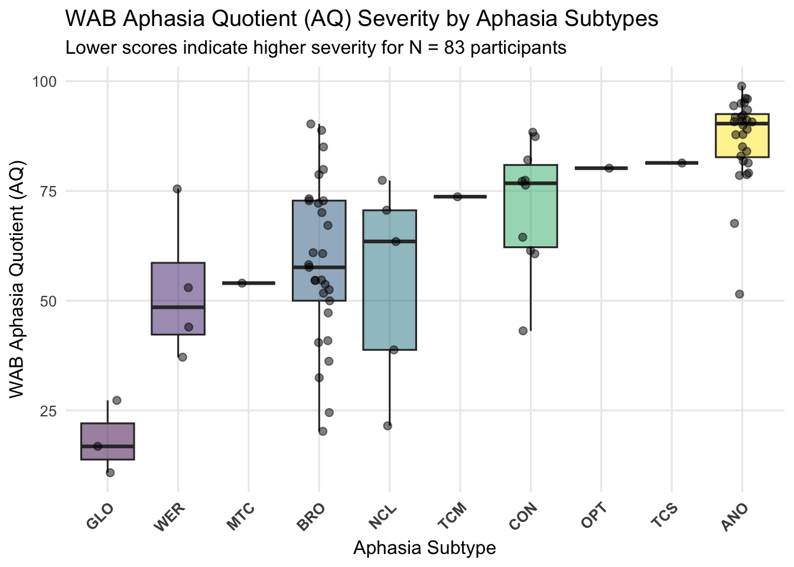

# load in packages and files
library(readxl)
library(tidyverse)
library(dplyr)
library(ggplot2)
library(stringr)
# load in datasets
demo_data <- read_excel("demo-data.xlsx", sheet = "Time 1")
eng_results <- read_excel("english-results-data.xlsx", sheet = "Time 1")FP 2: Preliminary Aphasia Severity Visualization
# clean demo data
demo_clean <- demo_data %>%
rename(
aphasia_type = `Aphasia Type --Clin Impression -- Boston`,
aphasia_cat = `Aphasia Category -- Clin Impression`,
lesion_side = `Lesion Side`,
lesion_loc_raw = `Lesion Location`
) %>%
filter(!is.na(lesion_loc_raw), !lesion_loc_raw %in% c("U", "NA", "unavailable", "not applicable", "")) %>%
filter(!is.na(aphasia_type), !aphasia_type %in% c("U", "NA", "unavailable", "not applicable", "non-classifiable"))
# clean results data
eng_clean <- eng_results %>%
rename(wab_aq = `WAB AQ\r\nNote: for Baycrest and NEURAL corpora, WAB scores are from Bedside WAB`) %>%
mutate(wab_aq = as.numeric(wab_aq)) %>%
filter(!is.na(wab_aq))
# merge demo & results datasets
demo_results_merged <- demo_clean %>%
inner_join(eng_clean, by = "Participant ID") %>%
mutate(aphasia_type = fct_reorder(aphasia_type, wab_aq, .fun = median, na.rm = TRUE))Visuals
ggplot(demo_results_merged, aes(x = aphasia_type, y = wab_aq, fill = aphasia_type)) +
geom_boxplot(alpha = 0.5, outlier.shape = NA) +
geom_jitter(width = 0.15, alpha = 0.5, size = 2) +
theme_minimal(base_size = 12) +
scale_fill_viridis_d(option = "viridis") +
labs(
title = "WAB Aphasia Quotient (AQ) Severity by Aphasia Subtypes",
subtitle = paste0("Lower scores indicate higher severity for ", "N = ", nrow(demo_results_merged), " participants"),
x = "Aphasia Subtype",
y = "WAB Aphasia Quotient (AQ)",
fill = "Aphasia Type"
) +
theme(
legend.position = "none",
axis.text.x = element_text(angle = 45, hjust = 1, face = "bold"),
panel.grid.minor = element_blank()
)
Narrative
This preliminary data visual is for a project focused on evaluating LLM models to work with speech from individuals with aphasia. This is a speech language disorder and it varies a lot in how it affects speech production, auditory comprehension, as well as overall communication. To get some more context and establish a baseline of the clinical severity in our dataset, this visualization explores how language impairment may vary across different subtypes of aphasia, to help guide our project work.
This boxplot visualization displays the Western Aphasia Battery (WAB) Aphasia Quotient (AQ) scores on the vertical y-axis while 10 different subtypes of aphasia are on the horizontal x-axis. The Western Aphasia Battery (WAB) is a standardized clinical scoring index that ranges from 0 to 100, where lower scores indicate a greater amount of severity and impairment, while the higher scores closer to 100 indicate a more mild impairment. The 10 diagnostic subtypes of aphasia on the x-axis are ordered from left to right based on their median performance with the most severe language decifits on the left towards the least severe on the right side. Each colored box shape is a standard boxplot where the horizontal line inside each box shows the median score and the box boundaries mark the interquartile range from 25th to 75th percentiles. The lines stretching vertically out of the boxes extend to show the full spread for each. There are also jittered dots overlaid on top of each boxplot to show individual participants in this sample set of 83 participants.
There are two contrasting points that stand out on this plot. GLO or Global Aphasia on the far left is shown as the most severe language impairment in this sample. All of the data points for Global Aphasia cluster tightly between scores of ~10 and 27 or 8, with a median at around 18. Clinically, this makes sense as people with Global aphasia tend to experience severe deficits across fluency, comprehension, and naming.On the opposite end, at the far right, is ANO or Anomic Aphasia. The boxplot sits near the top, with a median score ~90. This also makes clinical sense as anomic aphasia is considered a more mild communication disorder as those with Anomic aphasia will generally maintain fluent speech production and relatively intact comprehension, struggling primarily with word-finding.In the middle of the plot BRO or Broca’s Aphasia shows a massive spread in scores, spanning from ~20 all the way up to ~90, with a median near 60 or so. Interestingly enough, this also has clinical sense as two participants can share the same diagnosis of Broca’s non-fluent aphasia, yet one may be almost completely non-verbal while the other could have a more mild agrammatic speech. This shows that there is a significant amount of variability within this subtype that a clinical label alone cannot fully capture.
One key takeaway from this visualization is that Broca’s and Anomic aphasia’s make up a large portion of this set of 83 participants while the more rare subtypes like TCS (transcortical sensory) or MTC (mixed transcortical) aphasias only contain 1 or 2 participants each. This means that if we were to only look at the overall average performance of this dataset, the high sample size of Broca’s and Anomic aphasias would dominate the results and skew models. A model could handle mild Anomic speech well and seem to be accurate but then it may perform terribly on severe non-fluent speech or the more rare subtypes. So, evaluating speech across individual subtype groups and the severity tiers may help to avoid sample size bias.